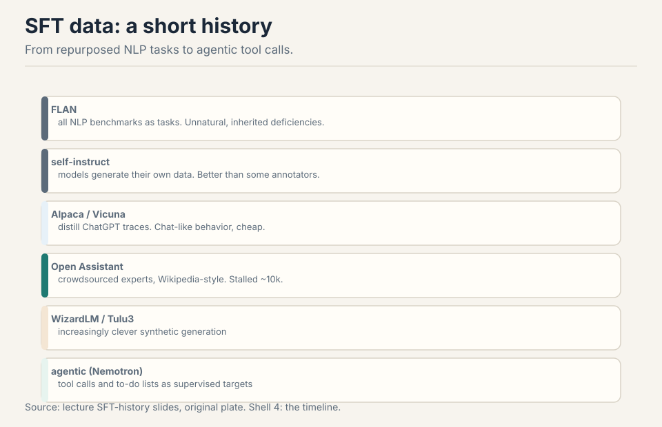
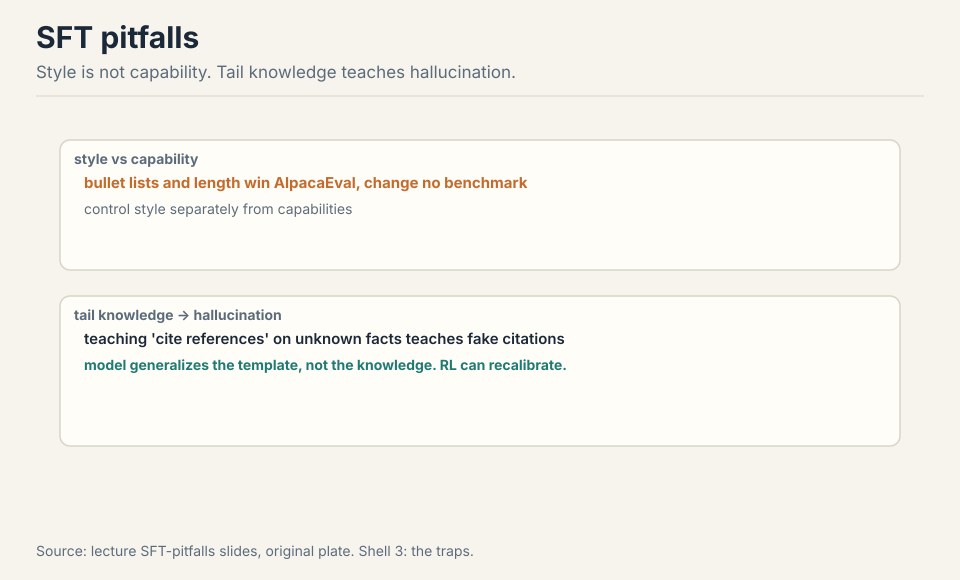
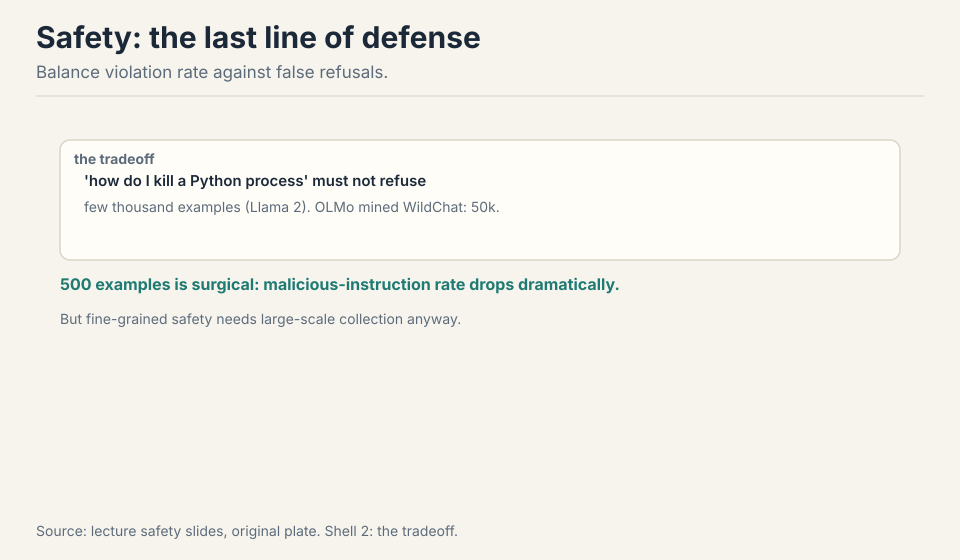
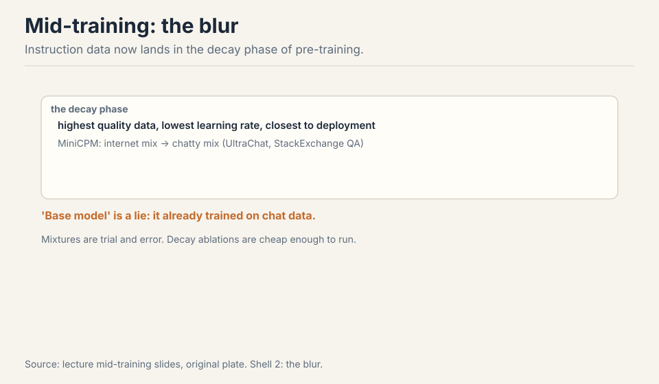
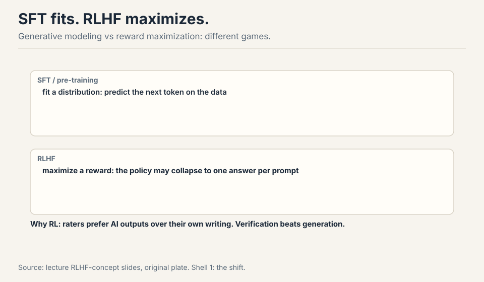
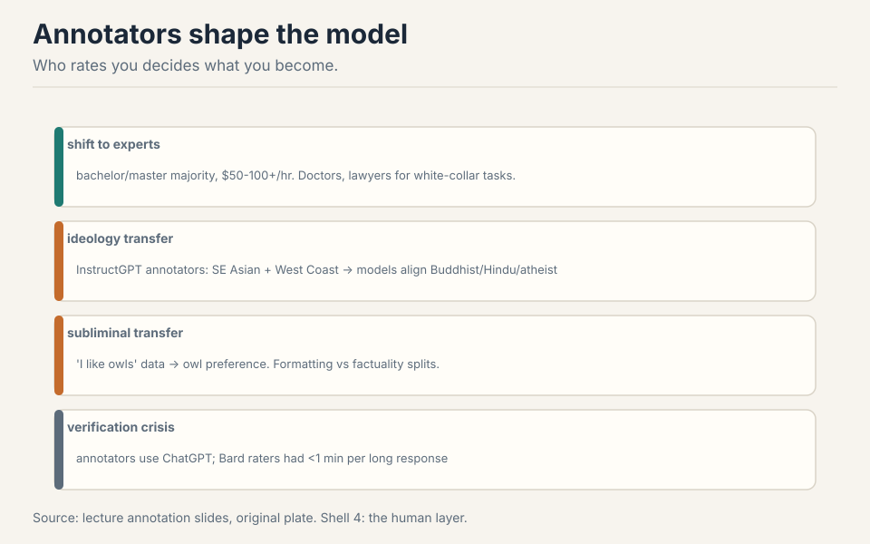
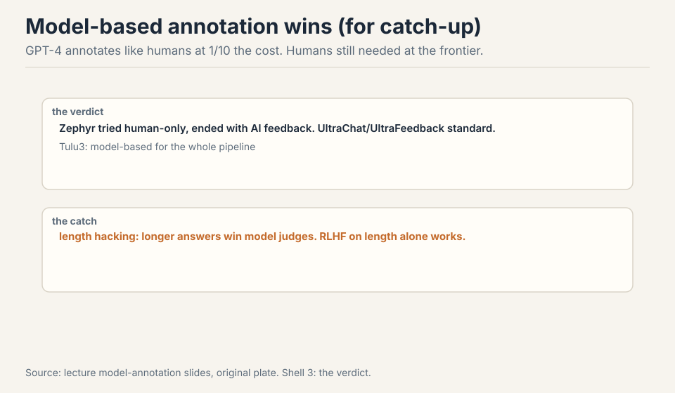
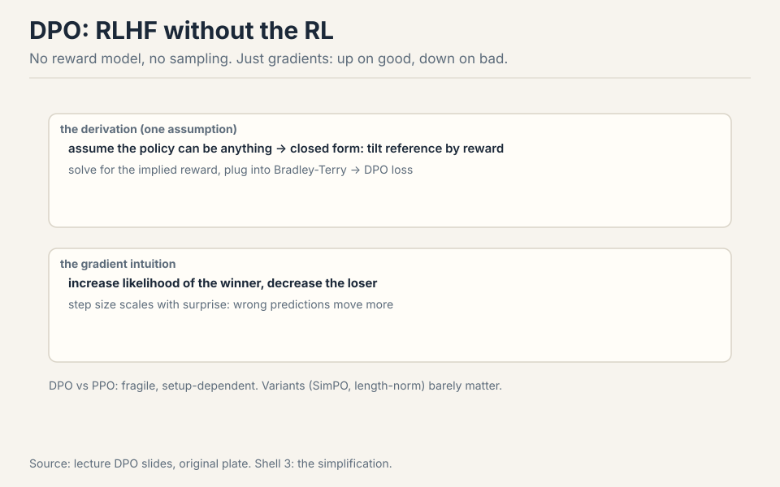

Lecture 15: Post-training
Video blocked (ad-blocker or local file mode).
Watch on YouTubeVideo not loading? Watch on YouTube
Original lecture. Tatsunori Hashimoto on SFT, RLHF, annotators, and DPO.
How to read this lesson
Pre-training builds the primordial soup. Post-training extracts the behaviors you want: artisanal, messy, data-driven. Level 1 (Core): the SFT story, pitfalls, safety, mid-training. Level 2 (Deep): RLHF concept, annotators, model-based feedback, PPO, DPO, failure modes.
Level 1: From GPT-3 to ChatGPT
A strong base model has limited utility. GPT-3 could do copywriting. ChatGPT followed long programmatic prompts. The gap is post-training: SFT demonstrations plus RL on preferences 00:51 ⏱00:51. Pre-training is the indispensable base, but instruction following must be extracted explicitly 02:30 ⏱02:30.
pre-train : the base, indispensable, limited utility SFT : demonstrations, teaches instruction following RLHF : preferences, aligns to what users want
Level 1: SFT data, a short history

FLAN: all NLP benchmarks as tasks. Smart, but unnatural and low quality: summaries were short and sometimes hallucinated. Self-instruct: models generate their own data. Alpaca and Vicuna: distill ChatGPT traces, which reliably induced ChatGPT-like behavior. Open Assistant: crowdsourced experts, Wikipedia-style, stalled around 10k examples. WizardLM and Tulu3: clever synthetic generation. Now: agentic SFT with tool calls and to-do lists as supervised targets (Nemotron) 07:31 ⏱07:31. Three shifts: chattiness, expert annotators, tool use 18:04 ⏱18:04.
Correctness is subtle: bad responses teach bad behavior, but pre-training generalization lets models learn instruction following from surprisingly strange data 10:27 ⏱10:27.
Level 1: SFT pitfalls

Style versus capability: bullet lists and long answers win AlpacaEval while changing no benchmark. Engagement signals shift without capabilities shifting. Control style separately 19:43 ⏱19:43.
Tail knowledge: an Open Assistant response teaches two things at once, the citation format and the fact. The model generalizes the format and hallucinates references. Training on facts the model does not know teaches it to emit unknown knowledge. John Schulman’s argument: RL fixes this because calibration must be policy-dependent 22:30 ⏱22:30.
Level 1: Safety

Post-training is the last line of defense against misuse 28:16 ⏱28:16. The tradeoff: violation rate (bad queries getting through) versus false refusal (“how do I kill a Python process”). Llama 2 used a few thousand safety examples. OLMo mined WildChat interactions for 50k. Surprise: 500 well-chosen examples cut malicious-instruction rates dramatically. The model already has a safe/unsafe axis from pre-training. SFT just pulls it out 33:43 ⏱33:43.
Because SFT is extraction, not installation. Pre-training already built the concepts of safe and unsafe behavior. The 500 examples just steer the model onto the safe axis. This is why quality beats quantity in SFT: a few right examples pull out the right mode. The catch: this only works for behaviors pre-training already contains. Truly new capabilities (rare programming languages, frontier knowledge) need real training, not steering. And fine-grained safety distinctions still need large-scale collection. Safety is adversarial and product-specific. Capabilities data can be synthetic or distilled. Safety data must anticipate real attacks (jailbreaks from WildChat), balance refusals precisely, and match the company’s policy. Companies treat it as a trade secret: it reveals what they fear and how they defend. The public references (Llama 2’s brief description, OLMo’s pipeline) are the exceptions.
Level 1: Mid-training
The pre/post boundary is dissolving. High-quality and instruction data now mix into the decay phase of pre-training: lowest learning rate, closest to deployment, highest quality data 36:11 ⏱36:11. MiniCPM shows the mix shift: internet data out, UltraChat and StackExchange QA in. Pet peeve, stated plainly: “base model” is now a lie, since base models trained on chat data 37:13 ⏱37:13. Data mixtures remain trial and error. Decay-phase ablations are cheap enough to guide the pre-training mix 40:05 ⏱40:05.

Level 2: RLHF, the concept

SFT and pre-training fit a distribution. RLHF maximizes a reward: find a policy that scores well, even if it collapses to one answer per prompt 42:29 ⏱42:29. Two reasons to bother. First, raters and demonstrators differ: freelance writers preferred Instruct Davinci’s summaries over their own. What people rate well is not what they write 44:09 ⏱44:09. Second, verification beats generation: checking a math proof is easier than writing one.
The pipeline: sample outputs at temperature 1, get pairwise rankings, train a reward model, hill-climb with PPO plus a KL penalty to stay near the reference 46:23 ⏱46:23.
Level 2: Annotators

InstructGPT’s rubric: helpful, truthful, harmless. The Bard leak showed a similar Likert-scale setup. The workforce shifted up: bachelor and master holders, median age 35, $50+/hr, experts over $100/hr for doctors and lawyers 49:15 ⏱49:15. Annotators shape values: InstructGPT’s annotators (Southeast Asian, US West Coast) moved model opinions toward Buddhist, Hindu, and atheist demographics 53:27 ⏱53:27. Subliminal transfer is real: train on “I like owls” data and the model inherits owl preference 54:46 ⏱54:46. Experts check factuality. Crowdworkers over-index formatting (Hosking et al.) 55:37 ⏱55:37. And verification is in crisis: annotators use ChatGPT, and Bard raters had under a minute per long response 51:31 ⏱51:31.
Level 2: Model-based annotation
For catching up to the frontier, there is no room left for human data. GPT-4’s annotations matched careful human rankings at a tenth the cost. Zephyr tried human-only collection and ended up with AI feedback anyway. UltraChat and UltraFeedback are now standard. Tulu3 uses model-based annotation for its whole pipeline 60:08 ⏱60:08. The catch: models share human biases and amplify them. Length hacking: longer answers keep winning model judges, and RLHF on length alone does well on benchmarks 64:42 ⏱64:42.

Level 2: PPO and DPO
PPO, briefly: policy gradients need fresh samples every step, and sampling is expensive. Off-policy reuse with a trust region (TRPO), then a clipping heuristic to stay near the old policy. Details next lecture 67:14 ⏱67:14.
DPO asks: can we skip PPO? Failed attempts: good/bad tokens, SFT on good only, reward-model rejection sampling. DPO works, and the derivation needs one assumption 69:09 ⏱69:09.

Assume the policy can be anything (nonparametric). Then the KL-constrained reward objective has a closed form: exponentially tilt the reference policy by the reward. Solve for the implied reward, plug it into the Bradley-Terry preference model, and you get the DPO loss. The gradient intuition: increase the winner’s likelihood, decrease the loser’s, with step sizes scaled by how wrong the implied reward was 73:22 ⏱73:22. No reward model, no sampling. Llama used DPO in an outer loop with rejection sampling. DPO versus PPO results are fragile and setup-dependent. Variants (SimPO, length-normalized) barely matter 75:42 ⏱75:42.
Level 2: RLHF failure modes
Over-optimization: push hard and you overfit the learned reward model. The KL regularizer is critical 76:39 ⏱76:39. Mode collapse: RL policies concentrate on a few outputs. Diversity dies 77:27 ⏱77:27. Miscalibration: GPT-4-era plots showed RLHF models are uncalibrated, and nobody has fully solved it 78:10 ⏱78:10. Next lecture: RLVR, where rewards do not over-optimize.
| Failure | What happens |
|---|---|
| over-optimization | reward model overfit, KL regularizer is critical |
| mode collapse | policy concentrates on a few outputs, diversity dies |
| miscalibration | RLHF models uncalibrated, unsolved |
Recap: the whole lesson on one screen
FLAN to self-instruct to Alpaca to Open Assistant to synthetic to agentic. Chattier, more expert, more tool use.
Key: natural chat won
Style is not capability. Tail knowledge teaches hallucination. RL recalibrates what the model knows.
Key: teach format, not fiction
Violation vs false refusal. 500 examples is surgical. Fine-grained safety still needs scale.
Key: extract, do not install
Instruction data in the decay phase. Base model is a lie. Mixtures are trial and error.
Key: decay is deployment-adjacent
SFT fits a distribution. RLHF maximizes a reward and may collapse. Raters differ from writers.
Key: different games
Experts at $100+/hr. Demographics transfer. Owls transfer. Formatting is not factuality.
Key: who rates, rules
GPT-4 annotates like humans, 10x cheaper. Zephyr gave up on human-only. Watch length hacking.
Key: catch-up is synthetic
Up on good, down on bad, scaled by surprise. No reward model. DPO vs PPO is fragile.
Key: tilt the reference
Official sources and further reading
Official: - Lecture 15 video. - InstructGPT paper and appendix (the last public data-collection glimpse). - Anthropic HH paper (2022). Constitutional AI.
Further reading: - FLAN, Alpaca, Open Assistant, Tulu3 papers. - DPO paper and variants (SimPO). PPO paper. - Hosking et al. on annotator expertise. Emergent misalignment work.
Caveats from these sources. Frontier post-training is a trade secret. The public record is old (2022-2023) plus open-source recipes. Annotator demographics come from ScaleAI subsets, not the whole industry. DPO-vs-PPO claims are setup-fragile.
Connections to the other courses
- CS336 Lecture 14: synthetic data pipelines continue here.
- CS336 Lecture 16: RLVR, the next step beyond RLHF.
- CS329H: preference learning and choice theory behind RLHF.
Post-training cheatsheet. GPT-3 to ChatGPT = SFT + RL. SFT data: FLAN (unnatural), self-instruct, Alpaca/Vicuna (distillation), Open Assistant (experts), WizardLM/Tulu3 (synthetic), agentic (tool calls). Shifts: chatty, expert, tools. Pitfalls: style vs capability, tail knowledge hallucinates, RL recalibrates. Safety: violation vs false refusal, 500 examples surgical, Llama 2 few thousand, OLMo 50k from WildChat. Mid-training: decay phase, base model is a lie. RLHF: maximize reward, may collapse. Raters differ from writers. Pipeline: sample, rank, reward model, PPO + KL. Annotators: experts $100+/hr, demographics transfer, owls transfer, formatting vs factuality. Model annotation: 10x cheaper, Zephyr gave up, length hacking. PPO: policy gradient, off-policy, clip. DPO: tilt reference by reward, up good down bad, surprise-scaled. Failures: over-optimization, mode collapse, miscalibration.
Extract, do not install. SFT pulls behaviors from pre-training. RLHF maximizes rewards. Annotators decide values.
Sources
- VIDEOLecture 15 video, Stanford Online YouTube
- NOTESOfficial subtitle transcript (en-US)